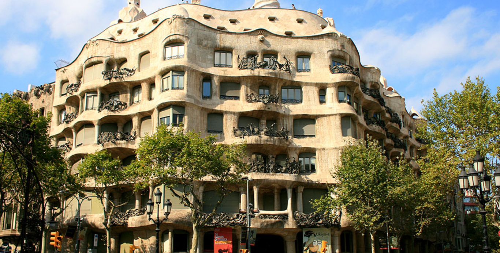

• •
PEDRERA

☰
La Casa Milà, conocida como 'La Pedrera' es uno de los grandes monumento de Antoni Gaudí que se sitúa en el Passeig de Gràcia,
muy cerquita de la Casa Batlló. La Pedrera es un edificio singular construido entre 1906 y 1912 por el arquitecto y
declarado Patrimonio Mundial de la Unesco el año 1984, y conforma uno de los edificios de la época modernista
más conocidos en todo el mundo y
tanto su singularidad como su valor patrimonial y artístico quedan ampliamente acreditados
con su inclusión en el Catálogo del Patrimonio Artístico de la Ciudad de Barcelona,
en 1962; con la declaración de Monumento Historico artístico de Interés Nacional por parte del Gobierno español, el año 1969, o con
la inscripción, por parte de la UNESCO, como Bien Cultural del Patrimonio Mundial, en 1984, por su valor universal excepcional.
La Casa Milà contaba con todas las ventajas de la época: agua caliente, luz eléctrica, garaje, etc. Esto se debe a que el espacio donde
se edificó La Pedrera estaba ocupado por un chalet que servía como límite fronterizo entre Barcelona y Gracia, que era una villa separada
de la ciudad hasta su anexión en 1897, y que se convirtió en el epicentro del Eixample barcelonés,
ylugar elegido por la burguesía de la ciudad para fijar su residencia.
De esta manera, La Pedrera se erigió sobre 6 plantas, entre las que se dividieron la vivienda de los propietarios (el matrimonio Milà),
un sótano destinado a trastero, garaje y sala de máquinas, y 14 viviendas más destinadas al alquiler, repartidas entre la primera y la cuarta planta.
Con el paso de los años el uso del edificio ha ido cambiando, y actualmente se trata de una fundación en la que se realizan diferentes actividades:
exposiciones, conferencias, debates, espectáculos. Definitivamente se ha convertido en todo un referente cultural de la ciudad.